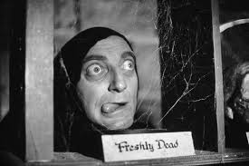
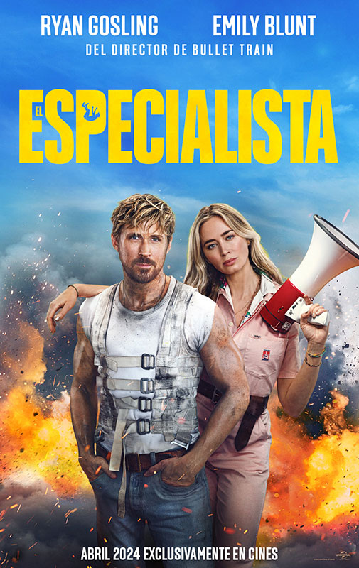

Hay muchísimos generos y todos somos más fans de unos que de otros, creo que es inevitable, ya que el cine es una de las cosas que nos hacen sentir todo tipo de sensaciones. Miedo, tristeza, alegria, risa...
Encontramos Comedia, Drama, Acción, Terror, Romance, Ciencia Ficción, Aventura, Thriller, Wester, Musicales.. y muchos más.
A continuación, nombraré algunos y pondre alguna pelicula que merece la pena ver de ese genero.
Comedia

Hay muchos tipos de comedia y esta pelicula es poco conocida y por eso me gusta tanto aparte que crecí con ella.
El jovencito Frankenstein. (1974). No hace falta decir que es una "versión" del mounstruo de Frankenstein.
Otra que me encanta es Top Secret de 1984 con Val Kilmer y como olvidadar La vida de Brian de 1979.
Otra saga que no se puede dejar de mencionar y que es muy querida entre los jovenes es entre otras: American Pie y Scary movie con guiños comicos a otras peliculas, jerga juvenil, si ha conseguido dejar en nuestra memoria escenas míticas eso es que tiene que estar dentro de las recordadas.
Acción.

Esta película no es una de las grandes como John Wick, famosa por sus conocidas coreografías de pelea, ni Misión imposible con Tom Cruise hace sus escenas de riesgo.
Esta película que recomiendo es del 2024 y la protagoniza Ryan Gosling, Emily Blunt, creo que hace un guiño digno de aplausos a la figura del especialista en el cine y realmente piensas como esa gente pone en peligro su vida para hacer escenas alucinantes. Se titula El Especialista.
Aventura.
Aquí no sabría con cual quedarme. Pero empiezo nombrando una de las grandes.
El señor de los anillos, la trilogía y después el Hobbit. Otra opción si no te gusta el mundo tan fantástico esta:
Piratas del caribe. Como no coger cariño a ese capitán loco.
Terror.
O lo odias o lo amas como se suele decir.
Tengo que decir que adoro notar la adrenalina, pero soy la primera que pego un grito o las veo con los ojos tapados o por el rabillo del ojo
Para mi la primera y con la que más miedo pasé fue the ring versión japonesa, puede que el año en el que se hizo 1998 y yo ser más joven sean unos factores a tener en cuenta.
Otro clásico que hay que mencionar es el exorcista 1973 y por las críticas la versión del 2004 no llegó a ser ni parecida.
Ya más moderna y con efectos de ordenador mucho mejores fue el boom de paranormal activity que fue un gran fenómeno.
Animación..
Comentar que personalmente este genero esta dando una vuelta de 360 grados, desde los 2000 a la actualidad ya no nos encontramos con tipicas películas que tenias que ver los los más pequeños de la familia, hoy en día muchas de las películas que voy a nombrar a continuación son reflexiones, didacticas a un nivel más intimo en el que intentan explicar como nos sentimos, tocan una vena sensible que anteriormente este genero no creo que consiguiera.
Que me decis de: InsideOut, Up, Soul, Coco...
Todas ellas y muchas más tocan nuestra fibra de una forma preciosa.